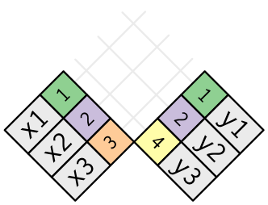

5 관계형 데이터
5.1 들어가기
데이터 분석에서 데이터 테이블이 단 하나만 관련된 경우는 거의 없다. 일반적으로 데이터 테이블이 많이 있고, 관심 있는 질문에 대답하기 위해 이들을 결합해야 한다. 여러 데이터 테이블을 총칭하여 관계형 데이터 라고 한다. 이렇게 부르는 이유는 중요한 것이 개별 데이터셋이 아니라 이들의 관계이기 때문이다.
관계라는 것은 항상 두 개의 테이블 사이에서 정의된다. 이 간단한 개념으로부터 다른 모든 관계가 구성된다. 테이블 3개 이상 사이의 관계는 항상 각 쌍 사이의 관계들을 이용하여 나타낼 수 있다. 때로는 쌍을 이루는 두 요소가 같은 테이블이 될 수도 있다! 예를 들어 사람에 대한 데이터 테이블을 가지고 있고, 각 사람이 부모에 대한 참조 정보를 가지고 있다면 이런 경우가 생긴다.
관계형 데이터로 작업하려면 두 개의 테이블에 작동하는 동사가 필요하다. 관계형 데이터에 동작하도록 설계된 세 가지 동사 계열이 있다.
뮤테이팅(Mutating, 변형) 조인 : 다른 데이터프레임에 있는 해당 관측값에서 가져와 새로운 변수로 생성하여 추가
필터링 조인 : 다른 테이블의 관측값와 일치하는지에 따라 관측값을 걸러냄
집합 연산 : 관측값을 집합 원소로 취급
관계형 데이터가 있는 가장 일반적인 장소는 관계형 데이터베이스 관리 시스템(RDBMS)이다. 이 용어는 거의 모든 현대의 데이터베이스를 포괄한다. 여러분이 이전에 데이터베이스를 사용했다면 SQL을 사용했을 것이 거의 확실하다. 그렇다면 dplyr 에서의 표현이 조금 다르긴 하지만, 이 장에 나오는 개념이 익숙할 것이다. 일반적으로 dplyr 은 SQL보다 약간 사용하기 쉽다. dplyr 은 데이터 분석에 특화되었기 때문이다. 즉, 일반적인 데이터 분석 작업을 하기는 더 쉽게 만들었지만, 대신 데이터 분석에서 일반적으로 필요하지 않은 작업을 수행하기는 더 어렵게 되었다.
5.1.1 준비하기
우리는 dplyr 의 2-테이블 동사를 사용하여 nycflights13 에 있는 관계형 데이터를 탐색할 것이다.
library(tidyverse)
library(nycflights13)5.2 nycflights13
관계형 데이터에 대해 배우기 위해 nycflights13 패키지를 사용할 것이다. nycflights13 패키지에는 3장에서 사용한 flights 테이블과 관련된 4개의 티블이 있다.
airlines를 사용하면 해당 약어 코드로 전체 항공사명을 찾아볼 수 있다.airlines #> # A tibble: 16 x 2 #> carrier name #> <chr> <chr> #> 1 9E Endeavor Air Inc. #> 2 AA American Airlines Inc. #> 3 AS Alaska Airlines Inc. #> 4 B6 JetBlue Airways #> 5 DL Delta Air Lines Inc. #> 6 EV ExpressJet Airlines Inc. #> # ... with 10 more rowsairports에는 각 공항에 대한 정보가faa공항 코드로 식별되어 있다.airports #> # A tibble: 1,458 x 8 #> faa name lat lon alt tz dst tzone #> <chr> <chr> <dbl> <dbl> <int> <dbl> <chr> <chr> #> 1 04G Lansdowne Airport 41.1 -80.6 1044 -5 A America/New… #> 2 06A Moton Field Municipal A… 32.5 -85.7 264 -6 A America/Chi… #> 3 06C Schaumburg Regional 42.0 -88.1 801 -6 A America/Chi… #> 4 06N Randall Airport 41.4 -74.4 523 -5 A America/New… #> 5 09J Jekyll Island Airport 31.1 -81.4 11 -5 A America/New… #> 6 0A9 Elizabethton Municipal … 36.4 -82.2 1593 -5 A America/New… #> # ... with 1,452 more rowsplanes에는 각 여객기에 대한 정보가tailnum으로 식별되어 있다.planes #> # A tibble: 3,322 x 9 #> tailnum year type manufacturer model engines seats speed engine #> <chr> <int> <chr> <chr> <chr> <int> <int> <int> <chr> #> 1 N10156 2004 Fixed win… EMBRAER EMB-1… 2 55 NA Turbo… #> 2 N102UW 1998 Fixed win… AIRBUS INDUST… A320-… 2 182 NA Turbo… #> 3 N103US 1999 Fixed win… AIRBUS INDUST… A320-… 2 182 NA Turbo… #> 4 N104UW 1999 Fixed win… AIRBUS INDUST… A320-… 2 182 NA Turbo… #> 5 N10575 2002 Fixed win… EMBRAER EMB-1… 2 55 NA Turbo… #> 6 N105UW 1999 Fixed win… AIRBUS INDUST… A320-… 2 182 NA Turbo… #> # ... with 3,316 more rowsweather에는 각 NYC 공항의 매 시각 날씨 정보가 있다.weather #> # A tibble: 26,115 x 15 #> origin year month day hour temp dewp humid wind_dir wind_speed #> <chr> <dbl> <dbl> <int> <int> <dbl> <dbl> <dbl> <dbl> <dbl> #> 1 EWR 2013 1 1 1 39.0 26.1 59.4 270 10.4 #> 2 EWR 2013 1 1 2 39.0 27.0 61.6 250 8.06 #> 3 EWR 2013 1 1 3 39.0 28.0 64.4 240 11.5 #> 4 EWR 2013 1 1 4 39.9 28.0 62.2 250 12.7 #> 5 EWR 2013 1 1 5 39.0 28.0 64.4 260 12.7 #> 6 EWR 2013 1 1 6 37.9 28.0 67.2 240 11.5 #> # ... with 2.611e+04 more rows, and 5 more variables: wind_gust <dbl>, #> # precip <dbl>, pressure <dbl>, visib <dbl>, time_hour <dttm>
그림을 사용하여 서로 다른 테이블 간의 관계를 볼 수 있다.

이 다이어그램은 꽤 복잡해 보이지만, 실전에서 보게 될 것과 비교하면 간단한 것이다! 이와 같은 다이어그램을 이해하는 데 핵심은 각 관계가 항상 한 쌍의 테이블과 관련되어 있음을 기억하는 것이다. 여러분은 모든 것을 이해할 필요는 없다. 관심 있는 테이블 사이의 연쇄적인 관계를 이해하면 된다.
nycflights13 에서
flights는 단 하나의 변수인tailnum을 통해planes에 연결된다.flights는carrier변수를 통해airlines에 연결된다.flights는origin(출발지) 및dest(목적지) 변수를 통해 두 가지 방법으로airports에 연결된다.flgiths는origin(위치),year, month, day, hour(시간)를 통해weather에 연결된다.
5.2.1 연습문제
각 여객기가 출발지에서 목적지까지 날아가는 경로를 대략 그려보고 싶다고 상상해보라. 어떤 변수가 필요한가? 어떤 테이블을 결합해야 하는가?
우리는 앞에서
weather와airports사이의 관계를 그리는 것을 잊어버렸다. 어떻게 관계되며, 다이어그램을 이용하여 어떻게 그려야 하는가?weather는 출발지 (NYC) 공항에 대한 정보만 포함한다. 미국의 모든 공항에 대한 날씨 기록이 포함되어 있다면flights와 어떤 관계가 추가되는가?우리는 일 년 중 어떤 날이 ‘특별하다’는 것을 알고 있으며, 이 날에는 평소보다 적은 수의 사람들이 항공여행을 한다는 것을 알고 있다. 이 데이터를 데이터프레임으로 어떻게 표현하겠는가? 이 테이블의 기본키는 무엇이겠는가? 기존 테이블에 어떻게 연결되는가?
5.3 키
각 테이블 쌍을 연결하는 데 사용되는 변수를 키라고 한다. 키는 관측값을 고유하게 식별하는 변수 (또는 변수 집합)이다. 간단한 경우 단일 변수만으로 관측값을 식별할 수 있다. 예를 들어 각 여객기는 tailnum 으로 고유하게 식별된다. 어떤 경우에는 여러 변수가 필요할 수 있다. 예를 들어 weather 의 관측값을 식별하려면 year, month, day, hour, origin 의 다섯 가지 변수가 필요하다.
두 가지 유형의 키가 있다.
기본키 는 자신의 테이블에서 관측값을 고유하게 식별한다. 예를 들어,
planes$tailnum은planes테이블의 각 여객기를 고유하게 식별하므로 기본키이다.외래키 는 다른 테이블의 관측값을 고유하게 식별한다. 예를 들어,
flight$tailnum은flights테이블에서 각 항공편을 고유한 여객기와 매칭시키기 때문에 외래키이다.
한 변수가 동시에 기본키이며 외래키일 수 있다. 예를 들어 출발지는 weather 기본키의 일부이며, airport 테이블의 외래키이기도 하다.
테이블에서 기본키를 확인한 후에는 실제로 기본키가 각 관측값을 고유하게 식별하는지 확인하는 것이 좋다. 이를 수행하는 한 가지 방법은 기본키를 count() 하고 n 이 1보다 큰 항목을 찾는 것이다.
planes %>%
count(tailnum) %>%
filter(n > 1)
#> # A tibble: 0 x 2
#> # ... with 2 variables: tailnum <chr>, n <int>
weather %>%
count(year, month, day, hour, origin) %>%
filter(n > 1)
#> # A tibble: 3 x 6
#> year month day hour origin n
#> <dbl> <dbl> <int> <int> <chr> <int>
#> 1 2013 11 3 1 EWR 2
#> 2 2013 11 3 1 JFK 2
#> 3 2013 11 3 1 LGA 2때로 테이블에 명시적인 기본키가 없는 경우가 있다. 모든 행은 관측값이지만 어떤 변수를 조합해도 각 행을 신뢰성있게 구분하지 못하는 경우이다. 예를 들어, flight 테이블의 기본키는 무엇인가? 여러분은 date 에 flight 혹은 tailnum 을 더한 것으로 생각하겠지만 이들 중 어느 것도 고유하지 않다.
flights %>%
count(year, month, day, flight) %>%
filter(n > 1)
#> # A tibble: 29,768 x 5
#> year month day flight n
#> <int> <int> <int> <int> <int>
#> 1 2013 1 1 1 2
#> 2 2013 1 1 3 2
#> 3 2013 1 1 4 2
#> 4 2013 1 1 11 3
#> 5 2013 1 1 15 2
#> 6 2013 1 1 21 2
#> # ... with 2.976e+04 more rows
flights %>%
count(year, month, day, tailnum) %>%
filter(n > 1)
#> # A tibble: 64,928 x 5
#> year month day tailnum n
#> <int> <int> <int> <chr> <int>
#> 1 2013 1 1 N0EGMQ 2
#> 2 2013 1 1 N11189 2
#> 3 2013 1 1 N11536 2
#> 4 2013 1 1 N11544 3
#> 5 2013 1 1 N11551 2
#> 6 2013 1 1 N12540 2
#> # ... with 6.492e+04 more rows이 데이터로 작업을 시작할 때 나는 각 항공편 번호(flight )가 하루에 한 번만 사용된다고 순진하게 추측했다. 그런 경우라면 특정 항공편의 문제에 대해 훨씬 쉽게 의사 소통할 수 있었을 것이었다. 불행히도 그것은 사실이 아니다! 테이블에 기본키가 없으면 mutate() 와 row_number() 를 이용하여 기본키를 추가해 보라. 이렇게 하면 필터링을 수행하고 난 후 원래 데이터와 다시 점검할 때 관측값을 쉽게 일치시킬 수 있다. 이를 대체키(surrogate key) 라고 한다.
기본키와 이와 대응되는 다른 테이블의 외래키는 관계 를 형성한다. 관계는 대개 일대다 관계(one-to-many)이다. 예를 들어 각 항공편에는 여객기가 하나 있지만, 각 여객기에는 여러 항공편이 있다. 다른 데이터에서는 가끔 일대일 관계를 보게 된다. 이것을 일대다 관계의 특별한 경우라고 생각할 수 있다. 다대일(many-to-one) 관계와 일대다 관계를 사용하여 다대다(many-to-many) 관계를 모델링할 수 있다. 예를 들어 이 데이터에는 항공사(airline )와 공항(airport ) 간 다대다 관계가 있다. 즉, 각 항공사는 많은 공항으로 운항하고, 각 공항에는 많은 항공사가 있다.
5.3.1 연습문제
flights에 대체키를 추가하라.다음 데이터셋의 키를 식별하라.
Lahman::Batting
babynames::babynamesnasaweather::atmosfueleconomy::vehiclesggplot2::diamonds
(이를 위해 패키지를 설치하고 설명서를 읽어야 할 수도 있다.)
Lahman패키지의Batting, Master, Salaries테이블 간의 연결을 나타내는 다이어그램을 그려라.Master, Managers, AwardsManagers사이의 관계를 보여주는 또 다른 다이어그램을 그려라.Batting, Pitching, Fielding테이블 간의 관계를 어떻게 규정하겠는가?
5.4 뮤테이팅 조인
한 쌍의 테이블을 결합하기 위해 살펴볼 첫 번째 도구는 뮤테이팅 조인(Mutating Join) 이다. 뮤테이팅 조인을 사용하면 두 테이블의 변수를 결합할 수 있다. 먼저 관측값을 키로 매칭시킨 다음 한 테이블에서 다른 테이블로 변수들을 복사한다.
mutate() 와 마찬가지로 조인 함수는 오른쪽에 변수를 추가하므로 이미 많은 변수가 있는 경우 새 변수가 출력되지 않는다. 이 예제에서는 어떤 일이 일어나는지 더 쉽게 보기 위해 더 좁은 데이터셋을 작성한다.
flights2 <- flights %>%
select(year:day, hour, origin, dest, tailnum, carrier)
flights2
#> # A tibble: 336,776 x 8
#> year month day hour origin dest tailnum carrier
#> <int> <int> <int> <dbl> <chr> <chr> <chr> <chr>
#> 1 2013 1 1 5 EWR IAH N14228 UA
#> 2 2013 1 1 5 LGA IAH N24211 UA
#> 3 2013 1 1 5 JFK MIA N619AA AA
#> 4 2013 1 1 5 JFK BQN N804JB B6
#> 5 2013 1 1 6 LGA ATL N668DN DL
#> 6 2013 1 1 5 EWR ORD N39463 UA
#> # ... with 3.368e+05 more rows(RStudio에서는 View() 를 사용하여 이 문제를 피할 수도 있음을 기억하라.)
flight2 데이터에 항공사 전체 이름을 추가하려고 한다고 가정하자. left_join() 으로 airlines 와 flights2 데이터프레임을 결합할 수 있다.
flights2 %>%
select(-origin, -dest) %>%
left_join(airlines, by = "carrier")
#> # A tibble: 336,776 x 7
#> year month day hour tailnum carrier name
#> <int> <int> <int> <dbl> <chr> <chr> <chr>
#> 1 2013 1 1 5 N14228 UA United Air Lines Inc.
#> 2 2013 1 1 5 N24211 UA United Air Lines Inc.
#> 3 2013 1 1 5 N619AA AA American Airlines Inc.
#> 4 2013 1 1 5 N804JB B6 JetBlue Airways
#> 5 2013 1 1 6 N668DN DL Delta Air Lines Inc.
#> 6 2013 1 1 5 N39463 UA United Air Lines Inc.
#> # ... with 3.368e+05 more rowsflights2 은 airlines 와 결합하여, 새로운 변수 name 이 추가되었다. 이것이 내가 이 유형의 조인을 뮤테이팅 조인이라고 부르는 이유이다. 이 경우 mutate() 와 R 의 베이스 서브셋작업을 사용하여 같은 위치에 도달할 수 있다.
flights2 %>%
select(-origin, -dest) %>%
mutate(name = airlines$name[match(carrier, airlines$carrier)])
#> # A tibble: 336,776 x 7
#> year month day hour tailnum carrier name
#> <int> <int> <int> <dbl> <chr> <chr> <chr>
#> 1 2013 1 1 5 N14228 UA United Air Lines Inc.
#> 2 2013 1 1 5 N24211 UA United Air Lines Inc.
#> 3 2013 1 1 5 N619AA AA American Airlines Inc.
#> 4 2013 1 1 5 N804JB B6 JetBlue Airways
#> 5 2013 1 1 6 N668DN DL Delta Air Lines Inc.
#> 6 2013 1 1 5 N39463 UA United Air Lines Inc.
#> # ... with 3.368e+05 more rows그러나 이 방법은 여러 변수를 매치시켜야 할 경우 일반화하기 어렵고, 또 전체적인 의도를 파악하기 위해서는 코드를 자세히 읽어야 한다는 단점이 있다.
다음 절에서는 뮤테이팅 조인의 작동 방식에 대해 자세히 설명한다. 우선 조인을 어떻게 시각적으로 표현하는지부터 배운다. 그런 다음 이를 사용하여 4개의 뮤테이팅 조인 함수, 즉 하나의 내부 조인(inner join)과 3개의 외부 조인(outer join)을 설명한다. 실제 데이터로 작업할 때 키가 항상 관측값을 고유하게 식별하지는 않기 때문에 다음으로는 고유한 매치가 없을 때 발생하는 상황에 대해 이야기하겠다. 마지막으로 조인이 정해졌을 때 어떤 변수가 이 조인의 키인지 dplyr 에 알려주는 방법을 배운다.
5.4.1 조인 이해하기
조인이 어떻게 작동하는지 배우기 위해 시각적 표현을 사용한다.

x <- tribble(
~key, ~val_x,
1, "x1",
2, "x2",
3, "x3"
)
y <- tribble(
~key, ~val_y,
1, "y1",
2, "y2",
4, "y3"
)색상이 있는 열은 ’키’ 변수를 나타내며, 테이블 사이의 행을 일치시키는 데 사용된다. 회색 열은 함께 따라가는 ’값’ 열을 나타낸다. 이 예제에서는 단일 키 변수와 단일 값 변수가 있지만, 다중 키와 다중 값으로 자연스럽게 일반화된다.
조인은 x 의 각 행을 y 의 0, 1 개 또는 여러 행에 연결하는 방법이다. 다음 다이어그램은 각각의 매칭 후보를 한 쌍의 선의 교차점으로 보여준다.

(주의 깊게 살펴보면 x 의 키 열과 값 열의 순서가 바뀌었음을 알 수 있다. 이는 조인이 키를 기반으로 매칭하며 값은 단지 따라간다는 것을 강조하기 위한 것이다.)
실제 조인에서는 매치 항목이 점으로 표시된다. 도트 수 = 매치 수 = 출력의 행 수이다.

5.4.2 내부 조인
가장 간단한 조인 유형은 내부 조인 이다. 내부 조인은 키가 같을 때마다 두 관측값을 매칭한다.
(정확하게 말하면 같음연산자(equality operator)를 사용하여 키가 매치되기 때문에 내부 동등 조인(equijoin) 이다. 대부분의 조인은 동등 조인이므로 우리는 일반적으로 이러한 상세한 내용을 생략한다.)
내부 조인(inner join)의 출력은 키, x 값 및 y 값을 포함하는 새로운 데이터프레임이다. by 를 사용하여 어떤 변수가 키인지를 지정한다.
x %>%
inner_join(y, by = "key")
#> # A tibble: 2 x 3
#> key val_x val_y
#> <dbl> <chr> <chr>
#> 1 1 x1 y1
#> 2 2 x2 y2내부 조인의 가장 중요한 특성은 매칭되지 않는 행은 결과에 포함되지 않는다는 점이다. 즉, 내부 조인은 관측값을 잃어버리기 쉽기 때문에 일반적으로 분석에 사용하기에 적합하지 않다.
5.4.3 외부 조인
내부 조인에서는 두 테이블 모두에 나타나는 관측값이 보존된다. 외부 조인(outer join)에서는 적어도 하나의 테이블에 있는 관측값은 보존된다. 외부 조인에는 세 가지 유형이 있다.
- 왼쪽 조인(left join) 은
x의 모든 관측값을 보존한다. - 오른쪽 조인(right join) 은
y의 모든 관측값을 보존한다. - 전체 조인(full join) 은
x와y의 모든 관측값을 보존한다.
이러한 조인은 각 테이블에 ’가상’ 관측값을 추가하여 작동한다. 이 관측값에는 항상 매칭되는 키 (다른 키가 매칭되지 않는 경우)와 NA 로 채워진 값이 있다.
그래픽으로 보면 다음과 같다.

가장 일반적으로 사용되는 조인은 왼쪽 조인이다. 매칭되지 않는 경우에도 원본 관측값을 보존하므로 다른 테이블에서 추가 데이터를 조회할 때마다 이 작업을 사용한다. 왼쪽 조인이, 작업 시 기본 조인이 되어야 한다. 다른 조인을 선호해야 하는 명백한 이유가 없다면 왼쪽 조인을 사용하라.
서로 다른 유형의 조인을 묘사하는 또 다른 방법은 벤 다이어그램을 사용하는 것이다.

그러나 이 표현법은 완벽하지 않다. 조인 유형들이 각각 어떤 테이블의 관측값을 보존하는지 알려주긴 하지만, 커다란 제약사항이 있다. 벤 다이어그램은 키가 고유하게 관측값을 식별하지 못할 때 어떤 일이 발생하는지를 표현할 수 없다.
5.4.4 중복키
지금까지 모든 테이블은 키가 고유하다고 가정했다. 하지만 항상 그런 것은 아니다. 이 절에서는 키가 고유하지 않은 경우 어떻게 되는지 설명한다. 두 가지 경우가 있다.
하나의 테이블에 중복키가 있다. 중복키는 추가적인 정보를 넣을 때 유용한데 일반적으로 일대다 관계가 있기 때문이다.

출력에서 약간 다른 위치에 키 열을 놓은 것을 확인하라. 이것은 키가
y의 기본키이고x의 외래키임을 보여준다.x <- tribble( ~key, ~val_x, 1, "x1", 2, "x2", 2, "x3", 1, "x4" ) y <- tribble( ~key, ~val_y, 1, "y1", 2, "y2" ) left_join(x, y, by = "key") #> # A tibble: 4 x 3 #> key val_x val_y #> <dbl> <chr> <chr> #> 1 1 x1 y1 #> 2 2 x2 y2 #> 3 2 x3 y2 #> 4 1 x4 y1두 테이블 모두 중복 키가 있다. 키가 어느 테이블에서도 고유하게 관측값을 식별하지 않기 때문에 이것은 일반적으로 에러이다. 중복 키를 결합하면 가능한 모든 조합인 데카르트곱(Cartesian product)을 얻을 수 있다.

x <- tribble( ~key, ~val_x, 1, "x1", 2, "x2", 2, "x3", 3, "x4" ) y <- tribble( ~key, ~val_y, 1, "y1", 2, "y2", 2, "y3", 3, "y4" ) left_join(x, y, by = "key") #> # A tibble: 6 x 3 #> key val_x val_y #> <dbl> <chr> <chr> #> 1 1 x1 y1 #> 2 2 x2 y2 #> 3 2 x2 y3 #> 4 2 x3 y2 #> 5 2 x3 y3 #> 6 3 x4 y4
5.4.5 키열 정의하기
지금까지 테이블 쌍은 항상 하나의 변수에 의해 조인되었으며 그 변수는 두 테이블에서 같은 이름을 가졌었다. 그 제약은 by = "key" 로 코드화되었다. by 에 다른 값을 사용하여 다른 방법으로 테이블을 연결할 수 있다.
기본값
by = NULL을 사용하면 두 테이블에 있는 모든 변수를 사용하며 이는 자연 조인(natural join)이라 부른다. 예를 들어flights및weather테이블은 공통 변수인year, month, day, hour, origin으로 매치된다.flights2 %>% left_join(weather) #> Joining, by = c("year", "month", "day", "hour", "origin") #> # A tibble: 336,776 x 18 #> year month day hour origin dest tailnum carrier temp dewp humid #> <dbl> <dbl> <int> <dbl> <chr> <chr> <chr> <chr> <dbl> <dbl> <dbl> #> 1 2013 1 1 5 EWR IAH N14228 UA 39.0 28.0 64.4 #> 2 2013 1 1 5 LGA IAH N24211 UA 39.9 25.0 54.8 #> 3 2013 1 1 5 JFK MIA N619AA AA 39.0 27.0 61.6 #> 4 2013 1 1 5 JFK BQN N804JB B6 39.0 27.0 61.6 #> 5 2013 1 1 6 LGA ATL N668DN DL 39.9 25.0 54.8 #> 6 2013 1 1 5 EWR ORD N39463 UA 39.0 28.0 64.4 #> # ... with 3.368e+05 more rows, and 7 more variables: wind_dir <dbl>, #> # wind_speed <dbl>, wind_gust <dbl>, precip <dbl>, pressure <dbl>, #> # visib <dbl>, time_hour <dttm>문자형 벡터
by = "x". 이것은 자연 결합과 같지만 일부 공통 변수만 사용한다. 예를 들어flights와planes에는year변수가 있지만 서로 다른 의미이므로tailnum으로만 조인하고 싶다.flights2 %>% left_join(planes, by = "tailnum") #> # A tibble: 336,776 x 16 #> year.x month day hour origin dest tailnum carrier year.y type #> <int> <int> <int> <dbl> <chr> <chr> <chr> <chr> <int> <chr> #> 1 2013 1 1 5 EWR IAH N14228 UA 1999 Fixe… #> 2 2013 1 1 5 LGA IAH N24211 UA 1998 Fixe… #> 3 2013 1 1 5 JFK MIA N619AA AA 1990 Fixe… #> 4 2013 1 1 5 JFK BQN N804JB B6 2012 Fixe… #> 5 2013 1 1 6 LGA ATL N668DN DL 1991 Fixe… #> 6 2013 1 1 5 EWR ORD N39463 UA 2012 Fixe… #> # ... with 3.368e+05 more rows, and 6 more variables: manufacturer <chr>, #> # model <chr>, engines <int>, seats <int>, speed <int>, engine <chr>year변수 (두 입력 데이터프레임 모두에 나타나지만 같지 않도록 제한시킴)는 접미사가 붙어서 출력에서 헷갈리지 않게 된 것을 확인하라.이름있는 문자 벡터,
by = c("a" = "b"). 테이블x의 변수a와 테이블y의 변수b를 매칭시킨다.x의 변수가 출력에 사용된다.예를 들어 지도를 그리려면
flights데이터를 각 공항의 위치(lat과lon, 위도와 경도)가 포함된airports데이터와 결합해야 한다. 각 항공편에는 출발 공항과 도착 공항이 있으므로 어떤 것에 조인할지 지정해야 한다.flights2 %>% left_join(airports, c("dest" = "faa")) #> # A tibble: 336,776 x 15 #> year month day hour origin dest tailnum carrier name lat lon #> <int> <int> <int> <dbl> <chr> <chr> <chr> <chr> <chr> <dbl> <dbl> #> 1 2013 1 1 5 EWR IAH N14228 UA Geor… 30.0 -95.3 #> 2 2013 1 1 5 LGA IAH N24211 UA Geor… 30.0 -95.3 #> 3 2013 1 1 5 JFK MIA N619AA AA Miam… 25.8 -80.3 #> 4 2013 1 1 5 JFK BQN N804JB B6 <NA> NA NA #> 5 2013 1 1 6 LGA ATL N668DN DL Hart… 33.6 -84.4 #> 6 2013 1 1 5 EWR ORD N39463 UA Chic… 42.0 -87.9 #> # ... with 3.368e+05 more rows, and 4 more variables: alt <int>, tz <dbl>, #> # dst <chr>, tzone <chr> flights2 %>% left_join(airports, c("origin" = "faa")) #> # A tibble: 336,776 x 15 #> year month day hour origin dest tailnum carrier name lat lon #> <int> <int> <int> <dbl> <chr> <chr> <chr> <chr> <chr> <dbl> <dbl> #> 1 2013 1 1 5 EWR IAH N14228 UA Newa… 40.7 -74.2 #> 2 2013 1 1 5 LGA IAH N24211 UA La G… 40.8 -73.9 #> 3 2013 1 1 5 JFK MIA N619AA AA John… 40.6 -73.8 #> 4 2013 1 1 5 JFK BQN N804JB B6 John… 40.6 -73.8 #> 5 2013 1 1 6 LGA ATL N668DN DL La G… 40.8 -73.9 #> 6 2013 1 1 5 EWR ORD N39463 UA Newa… 40.7 -74.2 #> # ... with 3.368e+05 more rows, and 4 more variables: alt <int>, tz <dbl>, #> # dst <chr>, tzone <chr>
5.4.6 연습문제
목적지별 평균 연착시간을 계산한 다음,
airports데이터프레임에 조인하여 연착의 공간 분포를 표시하라. 다음을 이용하여 미국 지도를 쉽게 그릴 수 있다.airports %>% semi_join(flights, c("faa" = "dest")) %>% ggplot(aes(lon, lat)) + borders("state") + geom_point() + coord_quickmap()(
semi_join()이 무엇인지 몰라도 걱정하지 마라. 다음에 배울 것이다.) 점의 크기 또는 색깔로 각 공항의 평균 연착 시간을 표시할 수 있다.flights에 출발지와 목적지의 위치 (즉,lat과lon)를 추가하라.여객기의 나이와 연착 시간 사이에 관계가 있는가?
어떤 기상 조건이 연착 가능성을 더 높이는가?
2013년 6 월 13 일에 무슨 일이 일어났는가? 연착의 공간 패턴을 표시한 다음 구글을 사용하여 날씨와 상호참조하라.
5.4.7 기타 구현
base::merge() 는 네 가지 유형의 뮤테이팅 조인을 모두 수행할 수 있다.
| dplyr | merge |
|---|---|
inner_join(x, y) |
merge(x, y) |
left_join(x, y) |
merge(x, y, all.x = TRUE) |
right_join(x, y) |
merge(x, y, all.y = TRUE), |
full_join(x, y) |
merge(x, y, all.x = TRUE, all.y = TRUE) |
특정 dplyr 동사의 장점은 코드의 의도를 좀 더 명확하게 전달한다는 것이다. 즉, 조인 간의 차이는 실제로 중요하지만 merge() 인수에 숨어 있다. dplyr 의 조인은 상당히 빠르며 행 순서를 어지럽히지 않는다.
dplyr 의 규칙은 SQL에 기반을 두므로 서로 옮겨쓰는 것은 복잡하지 않다.
| dplyr | SQL |
|---|---|
inner_join(x, y, by = "z") |
SELECT * FROM x INNER JOIN y USING (z) |
left_join(x, y, by = "z") |
SELECT * FROM x LEFT OUTER JOIN y USING (z) |
right_join(x, y, by = "z") |
SELECT * FROM x RIGHT OUTER JOIN y USING (z) |
full_join(x, y, by = "z") |
SELECT * FROM x FULL OUTER JOIN y USING (z) |
’INNER’및 ’OUTER’는 선택적이며 종종 생략된다.
inner_join(x, y, by = c("a" = "b")) 과 같이 테이블 간에 다른 변수를 결합하는 것은, SQL에서 약간 다른 문법을 사용한다. SELECT * FROM x INNER JOIN y ON x.a = y.b . 이 구문에서 알 수 있듯이, SQL은 dplyr 보다 폭넓은 조인 유형을 지원하는데 등식이 아닌 다른 제약 조건을 사용하여 테이블을 연결할 수도 있다. (비동등 조인(non-equisjoins)라고도 함)
5.5 필터링 조인
필터링 조인(Filtering join)은 뮤테이팅 조인과 같은 방식으로 관측값을 매칭하지만 변수가 아닌 관측값에 영향을 준다. 두 가지 유형이 있다.
semi_join(x, y)는y와 매치되는x의 모든 관측값을 보존한다 .anti_join(x, y)는y와 매치되는x의 모든 관측값을 삭제한다 .
세미 조인(Semi-joins)은 필터링된 요약 테이블을 다시 원래 행과 매치시키는 데 유용하다. 예를 들어 가장 인기 있는 상위 10개 도착지를 구했다고 가정해보자.
top_dest <- flights %>%
count(dest, sort = TRUE) %>%
head(10)
top_dest
#> # A tibble: 10 x 2
#> dest n
#> <chr> <int>
#> 1 ORD 17283
#> 2 ATL 17215
#> 3 LAX 16174
#> 4 BOS 15508
#> 5 MCO 14082
#> 6 CLT 14064
#> # ... with 4 more rows이제 그 목적지 중 한 곳으로 운행한 항공편을 찾고 싶다면 직접 필터를 만들 수 있다.
flights %>%
filter(dest %in% top_dest$dest)
#> # A tibble: 141,145 x 19
#> year month day dep_time sched_dep_time dep_delay arr_time
#> <int> <int> <int> <int> <int> <dbl> <int>
#> 1 2013 1 1 542 540 2 923
#> 2 2013 1 1 554 600 -6 812
#> 3 2013 1 1 554 558 -4 740
#> 4 2013 1 1 555 600 -5 913
#> 5 2013 1 1 557 600 -3 838
#> 6 2013 1 1 558 600 -2 753
#> # ... with 1.411e+05 more rows, and 12 more variables:
#> # sched_arr_time <int>, arr_delay <dbl>, carrier <chr>, flight <int>,
#> # tailnum <chr>, origin <chr>, dest <chr>, air_time <dbl>,
#> # distance <dbl>, hour <dbl>, minute <dbl>, time_hour <dttm>그러나 이러한 접근 방식을 여러 변수로 확장하는 것은 어렵다. 예를 들어 평균 연착시간이 가장 길었던 날 10일을 골라냈다고 상상해보라. year, month, day 를 사용하여 다시 항공편과 일치시키는 필터 구문을 어떻게 작성할 수 있는가?
한편 뮤테이팅 조인과 같이 두 테이블을 연결하는 세미 조인을 사용할 수 있지만 새 열을 추가하는 대신 y 에서 일치하는 x 의 행만 보존한다.
flights %>%
semi_join(top_dest)
#> Joining, by = "dest"
#> # A tibble: 141,145 x 19
#> year month day dep_time sched_dep_time dep_delay arr_time
#> <int> <int> <int> <int> <int> <dbl> <int>
#> 1 2013 1 1 542 540 2 923
#> 2 2013 1 1 554 600 -6 812
#> 3 2013 1 1 554 558 -4 740
#> 4 2013 1 1 555 600 -5 913
#> 5 2013 1 1 557 600 -3 838
#> 6 2013 1 1 558 600 -2 753
#> # ... with 1.411e+05 more rows, and 12 more variables:
#> # sched_arr_time <int>, arr_delay <dbl>, carrier <chr>, flight <int>,
#> # tailnum <chr>, origin <chr>, dest <chr>, air_time <dbl>,
#> # distance <dbl>, hour <dbl>, minute <dbl>, time_hour <dttm>세미 조인은 그래픽으로 다음과 같이 표현된다.

매칭되었는지 여부만이 중요하다. 즉, 어떤 관측값이 매칭되는지는 중요하지 않다. 이는 필터링 조인은 뮤테이팅 조인처럼 행을 복제하지는 않는다는 것을 의미한다.

세미 조인의 반대는 안티 조인이다. 안티 조인은 매칭되지 않는 행을 보존한다.

안티 조인(Anti-join)은 조인 불일치를 진단하는 데 유용하다. 예를 들어 flights과 planes 를 연결하는 경우, planes 에 매치되지 않는 flights 이 많다는 것을 알고 싶을 수 있다.
flights %>%
anti_join(planes, by = "tailnum") %>%
count(tailnum, sort = TRUE)
#> # A tibble: 722 x 2
#> tailnum n
#> <chr> <int>
#> 1 <NA> 2512
#> 2 N725MQ 575
#> 3 N722MQ 513
#> 4 N723MQ 507
#> 5 N713MQ 483
#> 6 N735MQ 396
#> # ... with 716 more rows5.5.1 연습문제
항공편에
tailnum이 없는 것은 무엇을 의미하는가?planes에 매치되는 관측값이 없는tailnum관측값의 공통점은 무엇인가? (힌트: 한 변수가 문제의 약 90%를 설명한다.)flights를 필터링하여 최소 100 편의 운행을 한 여객기의 항공편만 표시하라.fueleconomy::vehicles와fueleconomy::common을 결합하여 가장 많은 차량 모델의 레코드만 찾아라.최악의 연착 시간을 가진 (1년 중) 48시간을 찾아라. 날씨 데이터와 교차 참조하라. 어떤 패턴을 볼 수 있는가?
anti_join(flights, airports, by = c("dest" = "faa"))을 보고 무엇을 알 수 있는가?anti_join(airports, flights, by = c("faa" = "dest"))은 어떤가?각 항공기는 단일 항공사에 의해 운항되므로 항공기와 항공사 간에 암묵적인 관계가 있을 것으로 예상할 수 있다. 이전 절에서 배운 도구를 사용하여 이 가설을 확인하거나 기각하라.
5.6 조인 문제
이 장에서 작업하고 있는 데이터는 문제가 거의 발생하지 않도록 미리 정제되었다. 여러분의 데이터는 그리 깨끗하지 않을 것이므로 조인을 원활하게 하기 위해서 주어진 데이터에 수행해야 하는 몇 가지 작업이 있다.
우선 각 테이블에서 기본키를 구성하는 변수들을 식별하라. 경험적이 아니라 데이터 이해를 바탕으로, 고유한 식별자가 되는 변수의 조합을 찾아야 한다. 변수가 의미하는 바를 고려하지 않고 찾는다면 우연히도 현재의 데이터에서는 고유한 조합이지만 일반적으로는 그렇지 않을 수 있다.
예를 들어 고도(altitude)와 경도는 각 공항을 고유하게 식별하지만 좋은 식별자는 아니다!
airports %>% count(alt, lon) %>% filter(n > 1) #> # A tibble: 0 x 3 #> # ... with 3 variables: alt <int>, lon <dbl>, n <int>기본 키의 변수들에 결측값이 없는지 확인하라. 값이 결측된 경우에는 관측값을 식별할 수 없다!
외래 키가 다른 테이블의 기본 키와 매칭되는지 확인하라. 가장 좋은 방법은
anti_join()을 사용하는 것이다. 데이터 입력 에러로 인해 키가 매칭되지 않는 경우는 흔하다. 이를 고치는 것은 큰 작업일 때가 많다.키가 결측된 경우 매칭되지 않는 행을 삭제할 것인지를 신중하게 고려하면서 내부 조인과 외부 조인을 신중히 고려해야 한다.
조인이 원활하게 진행되었는지 확인하기 위해 조인 전후의 행 수만 살피는 것은 충분하지 않다. 두 테이블 모두에 중복 키가 있는 내부 조인의 경우, 불행히도, 삭제된 행 수가 복제된 행 수와 정확히 같을 수 있다!
5.7 집합 연산
2테이블 동사의 마지막 유형은 집합 연산이다. 일반적으로 이 필터는 가장 드물게 사용하지만, 복잡한 필터를 단순한 필터들로 분해하려는 경우에 가끔 유용하다. 이 모든 연산은 행 전체에 동작하는데 모든 변수의 값을 비교한다. 이 집합 연산은 x 와 y 입력이 같은 변수를 가지는 것을 간주하며 관측값을 집합으로 취급한다.
intersect(x, y)x, y모두에 있는 관측값만 반환union(x, y)
x와y의 고유한 관측값을 반환setdiff(x, y)x에 있지만,y에 없는 관측값을 반환
아래의 간단한 데이터에 대해서,
df1 <- tribble(
~x, ~y,
1, 1,
2, 1
)
df2 <- tribble(
~x, ~y,
1, 1,
1, 2
)네 가지 연산은 다음과 같다.
intersect(df1, df2)
#> # A tibble: 1 x 2
#> x y
#> <dbl> <dbl>
#> 1 1 1
# 열이 4개가 아니라 3개임을 주목
union(df1, df2)
#> # A tibble: 3 x 2
#> x y
#> <dbl> <dbl>
#> 1 1 2
#> 2 2 1
#> 3 1 1
setdiff(df1, df2)
#> # A tibble: 1 x 2
#> x y
#> <dbl> <dbl>
#> 1 2 1
setdiff(df2, df1)
#> # A tibble: 1 x 2
#> x y
#> <dbl> <dbl>
#> 1 1 2